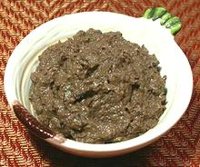

 |
TapenadeFrance,Provence - Tapenade | ||||
| Makes: Effort: Sched: DoAhead: |
1-1/3 cup ** 25 min Yes |
This black olive and caper spread is very popular in Provence (the name comes from Tapeno, caper in Provençal). Tapenade is also used as an ingredient in stuffed eggs and other recipes. | |||
|
1-2/3 1/2 2 6 1/2 1/4 4 |
# c cl t t T |
Olives, black (1) Capers Garlic Anchovy fillet (2) Herbs (3) Peppercorns Olive Oil, ExtV |
Make: - (25 min)
|